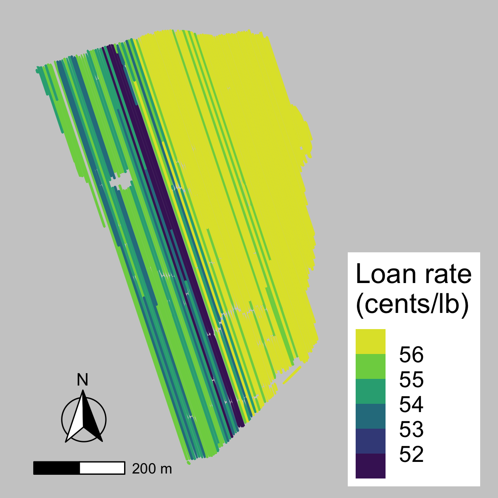
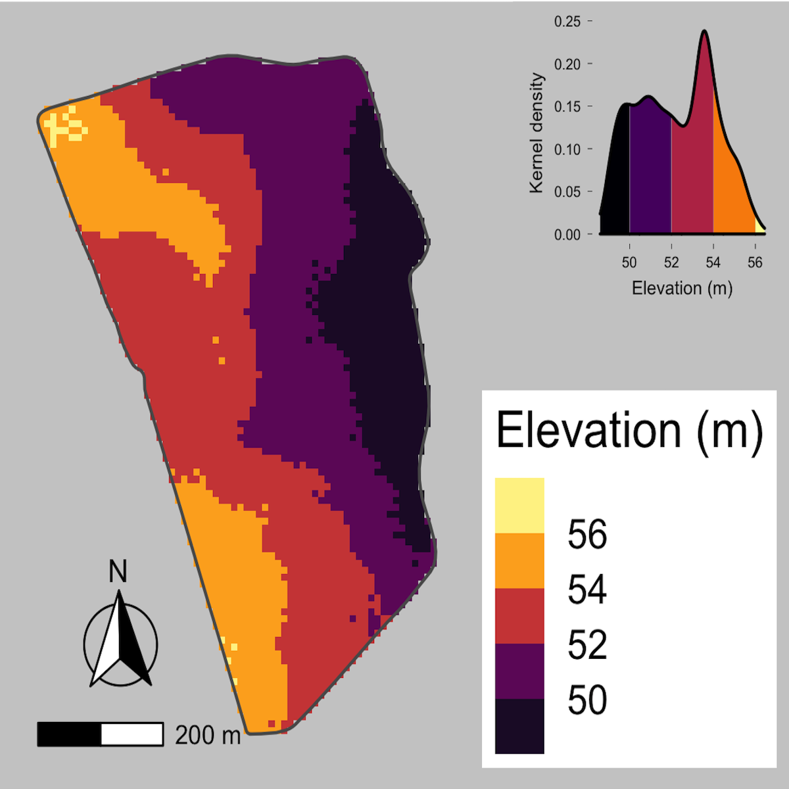
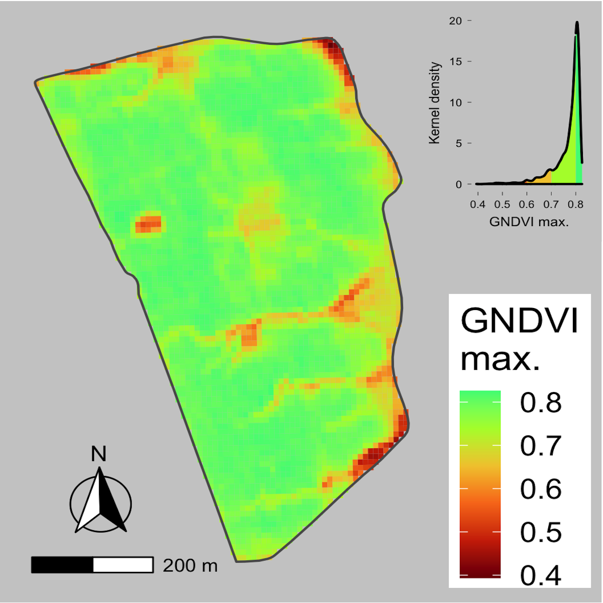
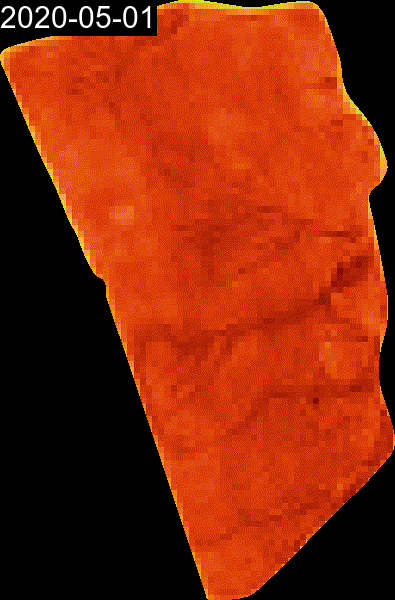
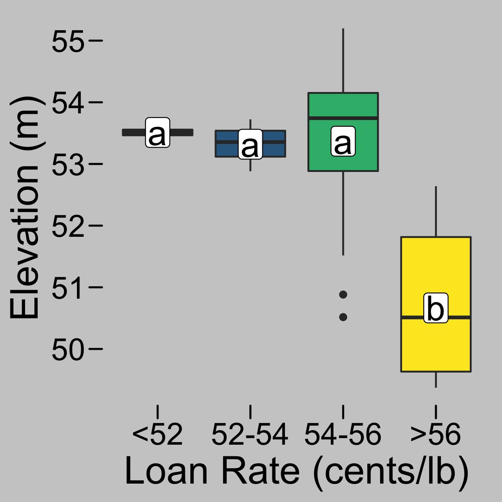
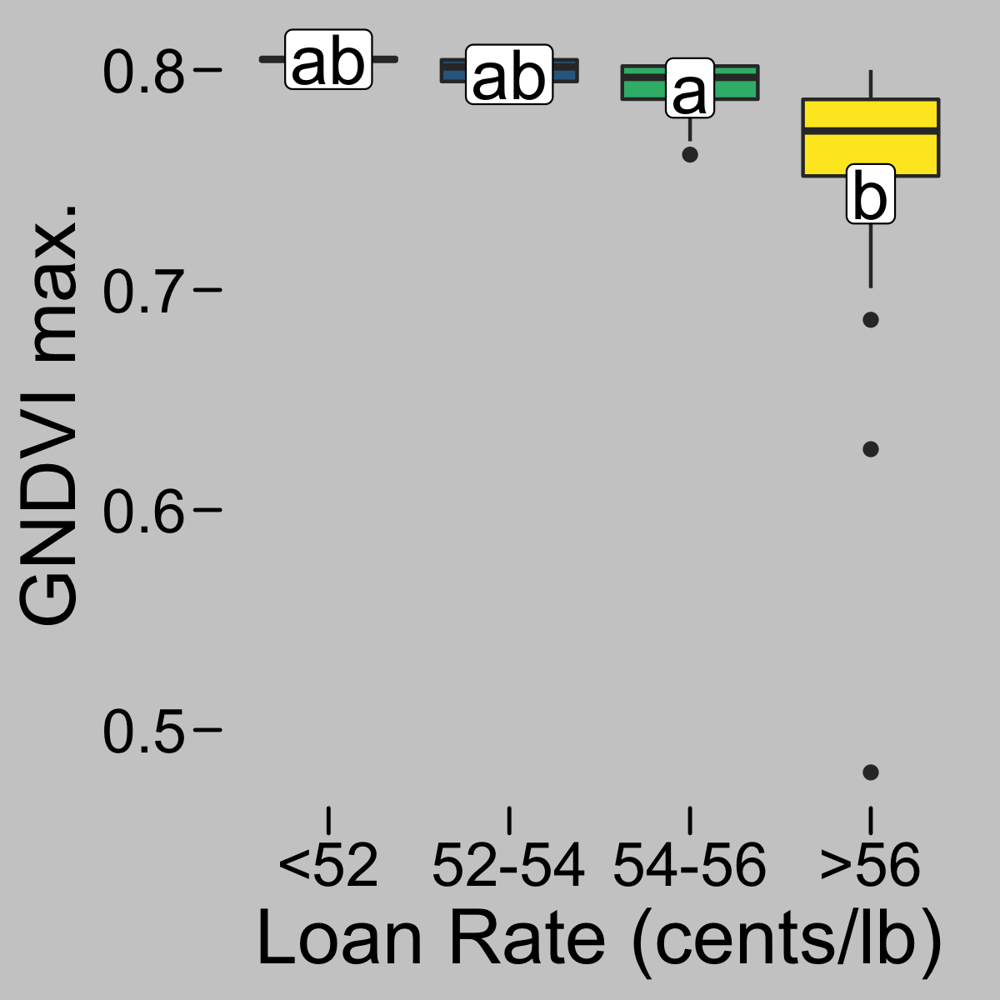

Cotton fiber quality prediction
Background
Cotton quality is a very important aspect of cotton production because it directly influences how much a grower gets paid. Cotton is harvested and processed at a gin before samples can be taken for quality analysis, so learning about your cotton quality and final price can take a while.
What if cotton growers could learn about cotton lint quality even before harvest? That is the task we set out to answer.
Methods
For that, cotton harvesters with Harvest Identification technology were used in 9 commercial cotton fields. The harvesters collected yield data and included radio frequency identification tags to each module as they were assembled.
Using the harvest identification technology, we were able to georeference cotton quality parameters to sub-field locations, and match them with soil topography and remote sensing data.
Different quality parameters like color, leaf grade, and strength, were used to calculate loan rate, which is a unified cotton quality number related to the value of cotton based on its quality. Loan rate is expressed in cents/lb cotton, and the larger it is, the higher quality cotton is and more a grower gets paid.

Soil topography data included elevation, slope, aspect, and flow direction. Here, we are only showing elevation for simplicity.

Remote sensing data was retrieved from the period between May 1st and August 31st from Sentinel-2 through Google Earth Engine for a total of 49 dates. Satellite data was used to calculate the green normalized difference index, GNDVI. GNDVI was summarized by extracting minimum, median, and maximum values during the growing season for each pixel in the field. Here, we are only showing GNDVI maximum for simplicity.

Checkout below a timelapse for all GNDVI images from which GNDVI max was extracted.

Preliminary results and next steps
We found that greater loan rate values (>56 cents/lb cotton) were associated with lower elevation and lower growing-season maximum GNDVI for this field.


Therefore, cotton quality can be spatially predicted using soil and remote sensing data.
Future work will include more fields with their associated weather data, more remote sensors, vegetation indices, and more complex machine learning algorithms to predict cotton quality.
Once validated, this project can be transformed into a tool that can impact different players in the cotton industry. For example, cotton growers will know what parts of their fields produce better quality cotton, and use this information for differential management and marketing purposes. On the other end, the textile industry will know what regions produce better-quality cotton. This information can be used to target the purchase of cotton from high-quality growing regions and ensure their yarn quality needs are met.